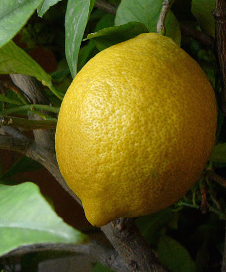
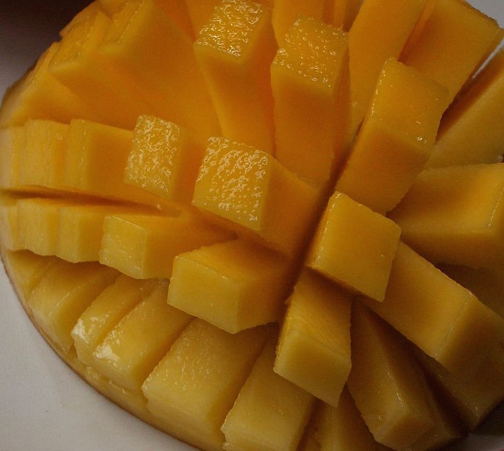
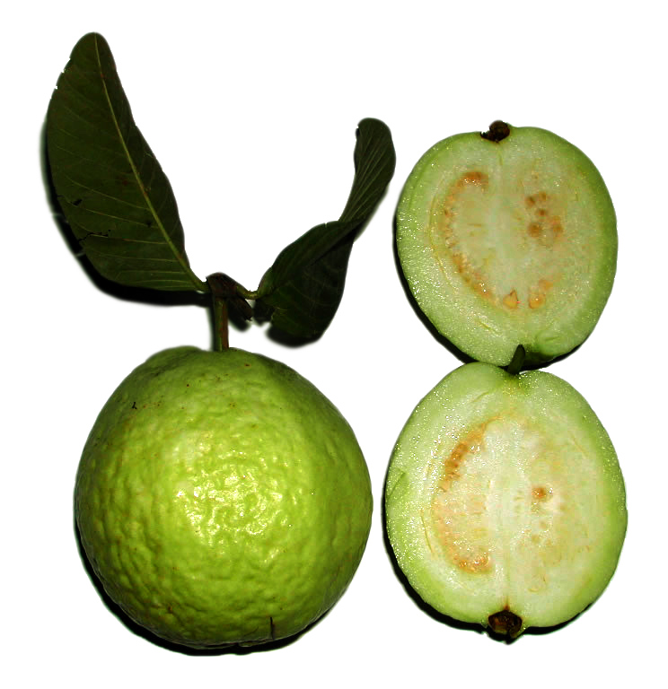

| Description of Images |
Images |
| A grape is a fruiting berry of the deciduous woody vines of the botanical genus
Grapes can be eaten raw or they can be used for making wine, jam, juice, jelly,
grape seed extract, raisins, vinegar, and grape seed oil. Grapes are a non-climacteric
type of fruit, generally occurring in clusters. |
 |
| The lemon is a species of small evergreen tree native to
The tree's ellipsoidal yellow fruit is used for culinary and non-culinary purposes
throughout the world, primarily for its juice, which has both culinary and cleaning uses. |
 |
| The mango is a juicy stone fruit belonging to the genus Mangifera, consisting of
numerous tropical fruiting trees, cultivated mostly for edible fruit.
The majority of these species are found in nature as wild mangoes. |
 |
| The onion plant has a fan of hollow, bluish-green leaves and the bulb at the base
of the plant begins to swell when a certain day-length is reached. In the autumn the
foliage dies down and the outer layers of the bulb become dry and brittle.
The crop is harvested and dried and the onions are ready for use or storage. |
 |
| Guava fruits have a pronounced and typical fragrance.The outer skin may be rough, often with a bitter taste, or soft
and sweet. Varying between species, the skin can be any thickness, is usually green before maturity,
but becomes yellow, maroon, or green when ripe.The pulp inside may be sweet or sour. |
 |